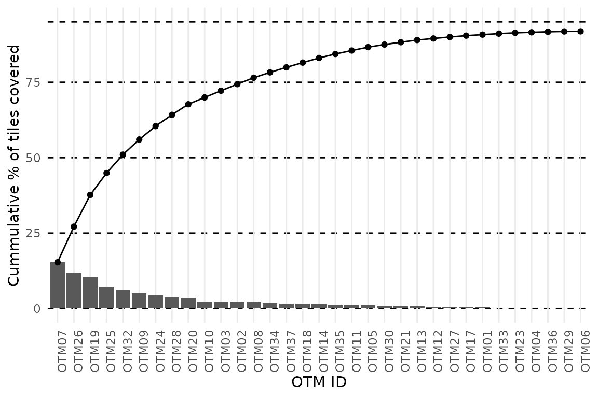

Predicting Thermal Landscapes
predicting_thermal_landscapes.RmdOverview
In this vignette, our goal is to illustrate the process behind the
final step in the workflow of the throne package, the
prediction of spatio-temporally complete thermal landscapes. To achieve
this, throne uses two functions: match_data
and predict_thermal_landscpe. The first allows the user to
match the thermal dynamics of a given tile within their site (i.e., a
unique latitude and longitude) as measured
across multiple flights with those of an operative temperature
model (OTM). The second, uses this matches
data set and combines it with information from date & OTM specific
cubic spline models (obtained using the gen_otm_splines)
function in this package to predict the temperature of each tile on the
site at any moment in time while the OTMs were deployed in the field. In
the context of the overall workflow of the package, this is the section
that is covered in this vignette:
Finally, we also provide some information on the predictive accuracy of this method which, as we present in the accompanying manuscript, is very high.
The match_data function
Inputs
The match_data function matches the thermal dynamics of
specific tiles (i.e., unique latitude and
longitude combinations) collected across multiple flights
to the thermal dynamics of an operative temperature model (OTM). To do
so, the function takes in the following inputs inherited from previous
functions :
- A
flights_datatibbleobtained using thernp_flights_data. We strongly recommend that thistibbleundergoes correction using thecorrect_flights_datafunction in order to ensure that the both theflights_datatibbleand the OTMs are on an operative temperature scale. However, the function will allow the user to use an uncorrectedflights_datatibbleif they so choose. - An
otm_splinescomplextibbleobtained using thegen_otm_splinesfunction.
Additionally, the match_data also requires
2 user specified inputs:
-
coverage_per, a numeric value between 0 - 1 indicating the minimum coverage that a tile should have across all flights provided in order t be included in the matching. The need for this input can be easily visualized by overlapping the area covered by multiple flights in the provided exampleflights_data(see image below). Due to the unique conditions during each of the34flights we conducted to perform this study (e.g., wind etc.), the area covered be each flights was variable specially when focusing around the edges. Nonetheless, we foresaw this effect which is why we ensured that the area covered by each flight would be much larger than the area of interest for our study, a precaution we recommend all users of this package to follow. Our goal was that the area where we had OTMs would be covered by flights and, as seen above, all OTMs deployed on the ground (black dots) fell on areas that were covered by the vast majority of our flights. As a general guideline, we recommend settingcoverage_per >= 0.9

-
error_max, the maximum error between temperature measurements of a tile and the OTM that best represents it, which we develop on more next.
To match tiles with OTMs that best describe their thermal dynamics,
the match_data function goes through the following general
steps:
It calculates the coverage across all flights for every single tile covered and selects only those tiles that have bee covered as much or more as the
coverage_perargument specifies.For each tile, calculate the average absolute error between the temperature measurements of that tile during each flight and the temperature measurements made by every OTMs at the exact same time each flight took place.
Select the OTM that minimizes the error between the tile’s and the OTMs measurements. In the figure below we illustrate the logic of this approach. The black dots indicate the temperature measurements associated with a given tile (note that these measurements are corrected using the
correct_flights_datafunction) across all flights that occurred in the days of the year (doy) 236, 237 and 238. The red and blue lines indicate the temperatures predicted by the spline model of 2 OTMs for those samedoy. In this case, thematch_datafunction would chooseOTM25to better represent the dynamics of that tile as the average different between each of the tile’s temperature measurements and those estimated by the cubic spline model for that OTM is much smaller than that forOTM05.
NOTE: The distance between the tile and the OTM is NOT weighted for during this step. This is because an OTM that is not necessarily the closest to that tile might actually be able to represent its thermal dynamics much better than one that is closer. For example, a tile that contains a tree might be represented by an OTM that is deployed inside of a tree at 100 m than one that is on a southern facing slope only 2 m away. This approach extends even to a the same tile where an OTM is deployed. Imagine a tile that is mostly facing south but that has a small bush on it. If an OTM is placed precisely on that bush, its thermal dynamics might not be representative of the average dynamics of that tile and an OTM placed elsewhere might actually represent that tile better. In the figure below we show the results of matching our example data set, in only 5 cases the same OTM that was on a tile best described its thermal dynamics.
- If the minimum error is above a certain threshold indicated by he
error_maxparameter do not assign any OTM to a tile. In the figure below we show the results of implementing this step with the areas marked in dark blue indicating tiles for which no one OTM could best describe it without exceeding the threshold imposed byerror_max. It is also important to note that these “problematic” tiles are far from the area of interest for this study (where the OTMs, indicated by black dots, where deployed) and that in this area the error is minimized.
 > NOTE: The figure above shades in light gray all tiles that were covered by at least 1 flights but that were not covered in at least 90% of flights. As seen above, the high-coverage area is much smaller than the total area covered in flights.
The resulting matches tibble will have an
otm_id column indicating the OTM that best describes a
given tile (i.e., a combination o latitude and
longitude) as well as a column for the matching
error for the user to check if desired. In rows where
error > error_max the otm_id will be
specified as NA.
matches## # A tibble: 6,386 × 4
## latitude longitude otm_id error
## <dbl> <dbl> <chr> <dbl>
## 1 39.9 -120. OTM26 3.60
## 2 39.9 -120. OTM26 3.61
## 3 39.9 -120. OTM14 2.96
## 4 39.9 -120. OTM26 2.93
## 5 39.9 -120. OTM26 3.14
## 6 39.9 -120. OTM02 2.45
## 7 39.9 -120. OTM26 2.61
## 8 39.9 -120. OTM26 2.71
## 9 39.9 -120. OTM26 2.50
## 10 39.9 -120. OTM26 2.98
## # ℹ 6,376 more rowsFrom this matches data we gather some interesting
findings. Including that:
- Very few OTMs are needed to explain the majority of the sites
thermal dynamics. In the example data set, only
5out of the33OTMs deployed were needed to explain more than >50% of the variability of the site and only21to explain >95%.

- The matching mechanism will automatically match tiles with a given
orientation to OTMs deployed in a tile with the same orientation. As
seen below and considering that the site is plotted in a N-S
orientation, we can, for example, that OTMs facing
Wbest described tiles that were on a western slope and so on.
